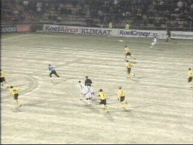

|
FC Groningen - Roda JC (3-2) 13 december 2002 |
Cristiano scoort de openingstreffer in de 16e
min. op de bevroren voetbalmat in Groningen die
speciaal voor deze wedstrijd met zand bespeel-
baar was gemaakt.

Even later scoort Vicelich 0-2 na voorbereidend
werk van Cristiano (25').
Een vreugdevol moment.
Groningensupporters gooien vuurwerk op het
veld waarna arbiter Braamhaar het duel in de
34e min. zes minuten stillegt.
Nadat Kujovic de bal onhandig laat glippen,
komt deze voor de borst van Van Gessel die er
raad mee weet: 1-2 (40').
Hugo scoort de gelijkmaker: 2-2 (63').

Matthijs kan uit een moeilijke hoek in het lege
doel schieten (75'). Roda heeft de wedstrijd
compleet uit handen gegeven en is na deze 3-2
nederlaag afgezakt naar de grauwe middenmoot.
© Koempels
Pleasure Dome